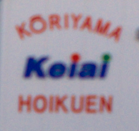
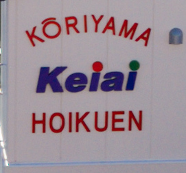
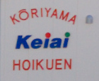
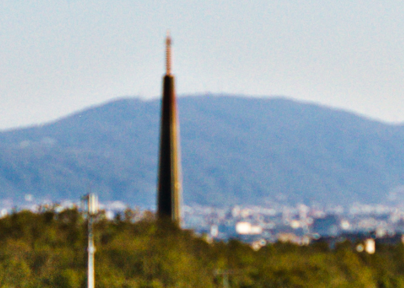
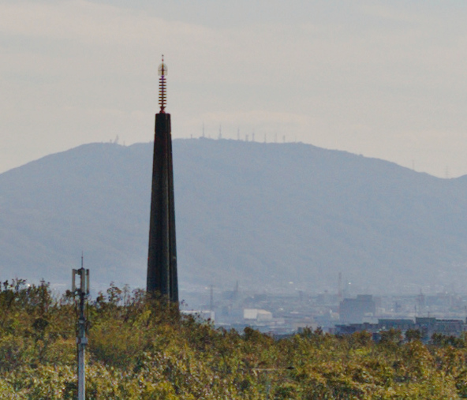
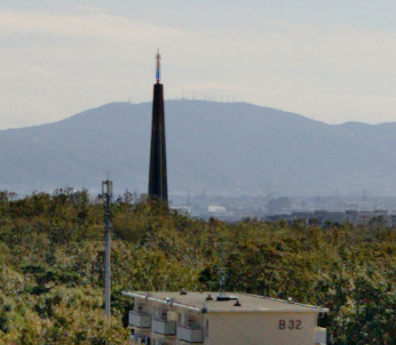

2018 年
11 月 03日 ( 土 )
再修理からの TAMRON SP AF17-50mm F2.8 XR DiII 帰還
修理に出していた TAMRON SP AF17-50mm F2.8 XR DiII が返ってきました。ですが結局タムロンでは修理できず新品と交換だそうです。ですがタムロンは信用できないのでテストしてみました。
保育園の看板を TAMRON SP AF17-50mm F2.8 XR DiII を使って AF で撮った以前のものが以下になります。50mm F2.8 での撮影です。

当然ぼけぼけですよね。以前の撮影データなんですから。
そして以下が今日届いた交換したレンズでの同じ場所を同じ条件で撮った写真になります。

今度はばっちりピントが合っているように見えます。ですが私は知っています。データは残っていませんが修理前のレンズで合焦した状態からピントを少し戻したときよりこの画像はピントが甘いんです。
そこで今度は 24mm F2.8 で撮ってみました。
やっぱり微妙にピントが合ってない。
そこで合焦から勘でごくわずかだけピントを戻して撮影したのが以下の写真になります。

こっちの方がピントがあってるでしょう？つまりまだ後ピンなんです。
さらに検証を続けます。
以下の写真は前回掲載した遠景の写真です。50mm F2.8 ND16 使用です。

同じ条件で新しいレンズで撮ってみました。AF での撮影です。

すこしだけマシになりましたが、なんだかやはりピントが合っていません。
下の写真は 26mm F2.8 AF で撮影しました。

やっぱりピントが微妙に合ってません。
そこでやはり合焦から勘でごくわずかにピントを戻したのが下の写真になります。

わずかですがピントがマシになっています。
以上のことから言えるのは TAMRON SP AF17-50mm F2.8 XR DiII は AF ではピントを合わせることができず、カメラのピントセンサーが合焦したとするところから勘でピントを戻してやらないとピントが合わないレンズであるということです。
勘頼みのピント合わせで写真を取り続けるか、レンズを破棄してしまうか悩みどころです。だって少なくはないお金を払って買ったレンズなのですから。
ちなみにタムロンは AF で合焦しないのはボディのせいだと言い切りました。ならばどうしてシグマのレンズでは AF でちゃんと合焦してピントがあった写真が撮れるのでしょうね。不思議なことを主張するタムロンさんですね。
それとも最近のカメラには普通についているレンズ毎に登録できる AF 微調整機能を使えばなんとかなるんでしょうかね。そうであればいいんですけどね。遠からずボディを買い替えますし。
- Category :
- 日記
- カメラ
- 写真
- レンズ
- タムロン
- TAMRON SP AF17-50mm F2.8 XR DiII